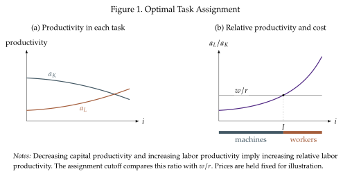
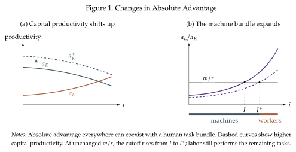

Task assignment and comparative advantage¶
The firm chooses the capital and labor allocated to every task, jointly determining which input performs each task and the quality of the tasks. Taking the rental rate \(r\), and the wage \(w\) as given, it solves
To obtain the cost-minimization conditions for task \(i\), notice that an additional unit of \(y(i)\) raises final output by
One additional unit of capital produces \(a_K(i)\) units of that service; one additional unit of labor produces \(a_L(i)\). Applying the chain rule, the optimality conditions at a positive-output allocation are
If the input its used, then it is demanded so that its marginal contribution to revenue equals its marginal cost (recall that \(\lambda\) is the marginal cost). An unused input cannot contribute more to revenue than it costs.
The principle of comparative-advantage¶
The term \(P(Y/y(i))^{1/\eta}\) is common to both inputs. Consequently, the firm assigns a task to the input that produces more of its service per dollar: capital if \(a_K(i)/r>a_L(i)/w\), and labor if the inequality is reversed.
Alternatively, we compare costs. A unit of task output requires \(1/a_K(i)\) capital costing \(r/a_K(i)\) or \(1/a_L(i)\) units of labor costing \(w/a_L(i)\). The cheaper input performs the task:
We can make this clearer if we impose an additional assumption that gives the task-index meaning by ordering tasks according to comparative advantage. Suppose that machines are better at low-index tasks and bad at high-index tasks, while humans are the opposite, better at high-index tasks and worse at low-index ones. Then, capital productivity is decreasing and labor productivity is increasing along the task index:
These assumptions imply that labor's relative productivity is increasing:
Crucially, this assumption is only about the change in productivity, not its level. Moving right makes labor better in absolute terms and capital worse, so labor necessarily becomes better relative to capital but not necessarily more productive than capital. We further assume that \(\,q(0)\,<\,w/r\,<\,q(1)\,\) so that both inputs are used by the firm. If \(w/r\) lies below \(q(0)\) all tasks go to labor; if it lies above \(q(1)\) all go to capital.
The fact that the relative productivity \(q\) is increasing means that there is a unique interior cutoff \(I\) satisfying
Thus \([0,I]\) is the machine bundle, with \(q(i)\leq w/R\), and \([I,1]\) is the labor bundle, with \(q(i)\geq w/R\). This is what we see in Figure 14. Tasks to the left of \(I\) lie below \(w/r\), so capital is cheaper. Tasks to its right lie above \(w/r\), so labor is cheaper.

Comparative advantage is different from absolute advantage¶
Capital has an absolute productivity advantage at a task if \(a_K(i)>a_L(i)\). But this does not determine the assignment unless \(w=r\). The following example helps make this clear. Let \(a_K(i)\,=\,2-i\), \(a_L(i)=0.5+i\), and \(w/r\,=\,0.6\). Notice that capital is more productive at all tasks \(i<3/4\). The cost cutoff is
In the optimal assignment, workers perform some tasks at which machines are more productive because workers are sufficiently cheaper.
Now shift capital productivity up to \(a_K^+(i)=3-i\), holding \(w/r=0.6\). Capital is more productive than labor at every task, but labor still performs the highest-index tasks
Absolute advantage everywhere does not eliminate the other input's comparative advantage or its task bundle.
